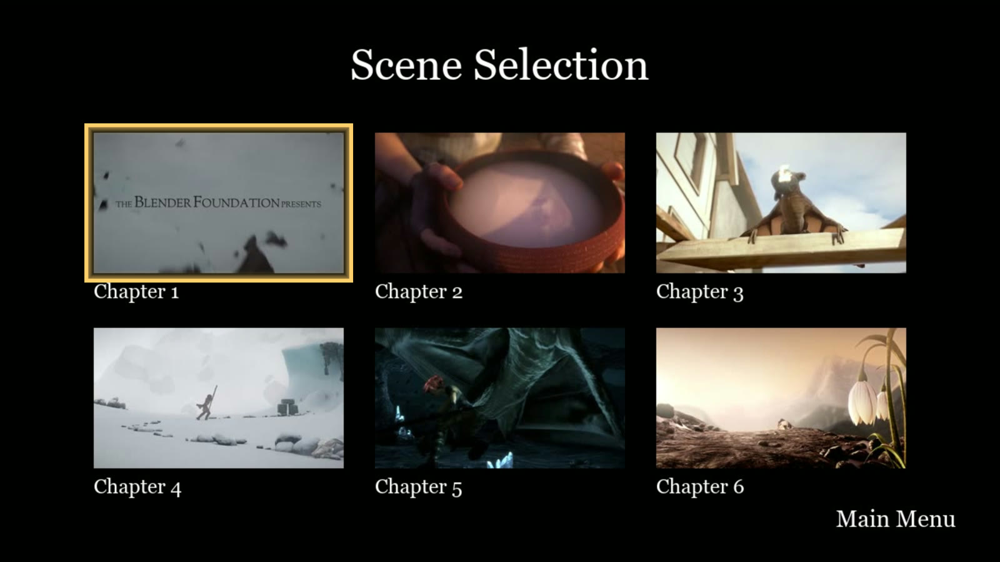
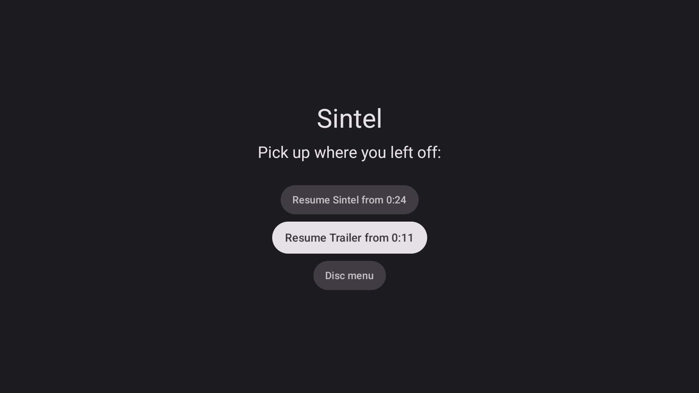

Open format · Royalty-free · Version 0.1
Bring back the menu.
Open Video Menu puts full menus on the films and shows you already have: animated backgrounds, scene selection, special features, audio and subtitle choices. It's one small file next to the video, played by the apps you already use.

Why
The extras never left. The menu did.
When films went digital, the bonus features mostly vanished. People still loved them, but the menu was what tied them to the film, and the menu didn't make the move.
Without it, trailers and featurettes sit as loose files beside the movie, or get left behind. Scene selection, commentary tracks and hidden extras went the same way.
Open Video Menu describes the menu itself: what's on screen, where each button leads, what plays. The menu works in any app that supports the format, with nothing else to buy or install.

How it works
A file next to your film. Nothing to reorganize.
Menus live beside the media, in the folders Plex and Jellyfin already use. The menu points at files you have; it never contains the film.
-
Add the menu
Put
Title.openvideomenu.jsonand its art next to the film, or a single tidyTitle.ovmzbundle. Tools make these for you. -
Your server shares it
The Jellyfin plugin serves menus straight from your library. For Plex, a small menu server runs alongside it. Both only read your files.
-
Press play on the couch
Open the title on your TV and its menu appears. Titles without a menu just play, as they always have.
# A film folder, as Plex and Jellyfin expect it Sintel (2010)/ Sintel (2010).mp4 Sintel (2010).ovmz ← the menu and its art Trailers/Sintel Trailer.mp4 Other/Music and Effects Track.mp4
Open, readable, small
A manifest is plain JSON, often a few kilobytes. It lists what can be played, the menus and their buttons, and a plain list that even the simplest player can show. Bundles pack the menu art into one file, stored uncompressed so servers can stream it directly.
See what's inside a manifest →What menus can do
Everything a great menu can do.
Motion menus
Animated backgrounds with music that loop from any point the menu chooses, and intros and transitions that any button press skips.
Scene selection
Chapter pages with thumbnails and highlights, and D-pad navigation that goes exactly where the menu's author intended.
Special features
Trailers, featurettes, deleted scenes and play-all, all linked to the files you already keep beside the film.
Audio and subtitles
Language and commentary menus that choose the soundtrack and subtitles, and remember your choice.
Pick up where you left off
Stop partway and pick up later: the film, an extra, or an episode. Progress syncs back to your media server.
Always a fallback
Every manifest carries a plain list, so any player can offer the extras, even one that can't draw menus at all.
Works today
On your server, on your TV.
Proof-of-concept players already run Open Video Menu on real TVs, from real libraries. They exist to show the format working today. We'd much rather your favourite app supported it natively.

Make menus
Import them, or make your own.
DVD Tamer
Turns a DVD's own menus into Open Video Menu, with buttons, highlights and navigation as the DVD had them.
Link and release dateCommand-line tools
openvideomenu validates manifests, previews menus in a browser, and packs or unpacks bundles.
Libraries
Read, write and check manifests from TypeScript or .NET, with the same results as the reference implementation.
For developers →Open by design
Free to implement. Forever compatible.
The specification is licensed CC BY 4.0 and covered by a royalty-free patent pledge (OWFa 1.0). The reference code is Apache-2.0. From version 1.0, manifests written today keep working: fields are never removed or redefined, and unknown fields are ignored.
- No fees, no permission needed, for free or commercial software
- A language-neutral conformance suite defines "compatible"
- No DRM, no accounts, no servers of ours in the loop
- Menus point at your files; the format never copies or changes your videos
Your films deserve their menus back.
Try the players, read the spec, or add support to your app.